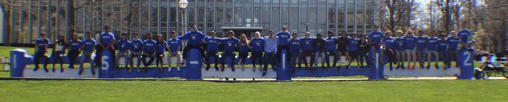
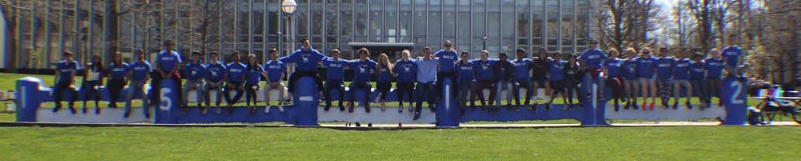

| Description |
A technical introduction to the fundamentals of programming with an emphasis
on producing clear, robust, and reasonably efficient code using top-down
design, informal analysis, and effective testing and debugging. Starting
from first principles, we will cover a large subset of the Python
programming language, including its standard libraries and programming
paradigms. We will also target numerous deployment scenarios, including
standalone programs, shell scripts, and web-based applications. This course
assumes no prior programming experience. Even so, it is a fast-paced and
rigorous preparation for 15-122. Students seeking a more gentle introduction
to computer science should consider first taking 15-110. NOTE: students must
achieve a C or better in order to use this course to satisfy the
pre-requisite for any subsequent Computer Science course.
|
Learning
Objectives |
- Develop computational problem-solving skills using Python as a tool to be applied to new problems, especially in the student's home academic discipline
- Produce clear, robust, and efficient code in Python by
- employing modular, top-down design
- using sequential, conditional, and loop statements where appropriate
- using strings, lists, tuples, and dictionaries where appropriate
- using objects and classes where appropriate
- integrating recursive functions where appropriate
- proactively designing and writing test cases to effectively test and debug code
- Develop an effective programming style based on established standards, practices, and guidelines
- Describe the difference between programming and Computer Science, and gain exposure to some of the Big Ideas of Computer Science (e.g., Computability)
- Explain and analyze the efficiency of algorithms by:
- proving the running time (Big-O) of various well-known searching and sorting algorithms
- determining (not proving) the running time (Big-O) of a small piece of code
- describing the difference between small code optimizations and more substantive algorithmic optimizations
- Design and implement event-based graphical animations
- Develop and write a substantial (500-1500 line) program in Python to implement a solution to a term project of their choosing over three to four weeks
|
 
